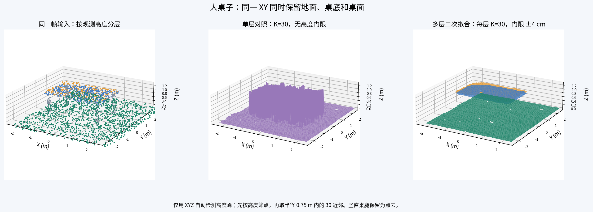

① 输入点云与高度分层
绿：地面 · 蓝：桌底 · 橙：桌面 · 灰：带外观测
先限制高度，再取该层的 30 个近邻。地面、桌底、桌面分别拟合，同一 XY 同时保留多个 Z。
三维与剖面均为真实高度；三个视角同步，拖动旋转、滚轮缩放。
绿：地面 · 蓝：桌底 · 橙：桌面 · 灰：带外观测
同一输入，K=30；每个 XY 只留一个 Z，无高度门限
每层独立取 30 点，独立建网，不跨层连接
移动到曲线上读取同一 X 的各层拟合高度。
附近输入点取剖面 ±0.10 m 带。所有曲线均为实际拟合值；无效处断开，不插值补线。“展开高度层”不改变这里的数值。
红色圆点是该层选取的近邻；红色十字是查询位置。查询在局部 XY 凸包外、缺少支持或不足 30 点时留空。
误差使用合成场景几何真值，真值仅参与评估。覆盖率分母为该层在整个窗口内的真实范围；MAE 只统计有效且位于真实表面内的查询。
这是针对桌子近水平层的诊断。全局高度峰分层不能直接替代任意斜坡、竖直面或复杂曲面的通用分割。原同帧含噪声及随机丢点，完整点云没有模拟激光遮挡。
